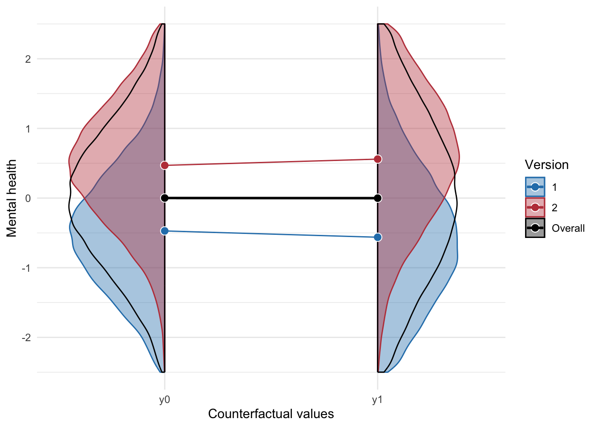

This is the online supplement for Harmful Compared to What? The Problem of Gaming and Ambiguous Causal Questions (Magnusson, Johansson, & Przybylski, 2023, in preparation), containing the code for all calculations and figures presented in the article.
This function was created to simulate a binary confounder.
#' Simulate data with a binary exposure & confounder#'#' Will generate a dataset with a binary exposure and confounder with an#' observed difference of a specific magnitude, while the true average#' causal effect is zero. The outcome is continuous.#'#' @param n the number of participants per group#' @param m_young the mean outcome among the young people#' @param p_a1_young the proportion of young people among the exposed (A = 1)#' @param d the (biased) standardized mean difference between the exposed #' and non-exposedsimulate_confounding <-function(n, m_young, p_a1_young, d) {# this is to make sure the overall group diff is equal to d m_old <- d / (2* p_a1_young -1) M <-c(m_young, m_old) p <-c(1- p_a1_young, p_a1_young) var_M <-sum((M -sum(M * p))^2* p) SD <-sqrt(1- var_M) params <-data.frame(n =c( n * (1- p_a1_young), n * p_a1_young, n * p_a1_young, n * (1- p_a1_young) ),A =c(0, 0, 1, 1),U =c(2, 1, 2, 1),mean =c( m_young, m_old, m_young, m_old ),SD = SD )pmap( params,function(n, A, U, mean, SD) {data.frame(A = A,U = U,y =rnorm(n, mean, SD) ) } ) %>%bind_rows() %>%mutate(A =factor(A, labels =c("No gaming", "Gaming")),U =factor(U, labels =c("Old", "Young")) )}
When then simulate a large data set with a high proportion (85%) young people among the exposed.
Figure 1: Illustration of a third variable violating the exchangeability assumption
Unsurprisingly, we get the same biased effect if we run a regression without including the confounder U, as shown in Table 2.
broom::tidy(lm(y ~ A, data = d)) %>%kable(digits =2)
Table 2: Linear regression without adjusting for the confounder
term
estimate
std.error
statistic
p.value
(Intercept)
0.61
0
191.73
0
AGaming
-0.50
0
-112.35
0
Adjusting for U removes the confounding, as shown in Table 3.
broom::tidy(lm(y ~ A + U, data = d)) %>%kable(digits =2)
Table 3: Linear regression adjusting for the confounder
term
estimate
std.error
statistic
p.value
(Intercept)
0.71
0.00
223.38
0.00
AGaming
-0.01
0.01
-0.88
0.38
UYoung
-0.71
0.01
-117.24
0.00
Exposure-version confounding example
Now we will focus on exposure-version confounding. First, we write a function to generate simulated data with 4 versions, 2 versions for the non-exposed and 2 versions for the exposed, both exposure and version is influenced by the binary confounder (W).
#' Simulate data with exposure-version confounding#'#' Will generate a dataset with a binary exposure-version confounder with an#' observed difference of a specific magnitude, while the true average#' causal effect is zero. Both the confounder and exposure is binary,#' whereas the outcome is a continuous variable.#'#' @param n the number of participants per group#' @param pr_W the probability of a participant being young#' @param pr_A_W the probability of being exposed among the young#' @param pr_K_W_a0 the probability of K = 2 among the non-exposed young#' @param pr_K_W_a1 the probability of K = 2 among the exposed young#' @param sd_a0 the total SD for the non-exposed #' @param sd_a1 the total SD for the exposed#' @param d the (biased) standardized mean difference between exposed #' and non-exposedsimulate_data <-function( n, pr_W, pr_A_W, pr_K_W_a0, pr_K_W_a1, sd_a0, sd_a1, d) {# confounder W <-rbinom(n, 1, pr_W)# treatment A <-rbinom( n,1,ifelse(W ==1, pr_A_W, 1- pr_A_W) )# versions when A = 0 K_a0 <-rbinom( n,1,ifelse(W ==1, pr_K_W_a0, 1- pr_K_W_a0) ) +1# versions when A = 1 K_a1 <-rbinom( n,1,ifelse(W ==1, pr_K_W_a1, 1- pr_K_W_a1) ) +1# Code below appears more complicated than it is,# it's just a bunch of conditional probabilities to get the correct # proportions and variances. We do this so the total variance # will be sd_a0 and sd_a1, and the observed standardized # difference will be equal to `d`.# Pr(A) pr_A <- pr_A_W * pr_W + (1- pr_A_W) * (1- pr_W)# Solve for params in non-gamers group# Pr(W = 1 | A = 0) pr_w_a0 <- pr_W * (1- pr_A_W) / (1- pr_A)# Pr(K == 2 | A = 0) p_k2_a0 <- pr_w_a0 * pr_K_W_a0 + (1- pr_w_a0) * (1- pr_K_W_a0)# Pr(K == 1 | A = 0) p_k1_a0 <-1- p_k2_a0# E(Y0 | K = 1) M_Y0_k1 <--0.5# E(Y0 | K = 2) M_Y0_k2 <-0.5 pr <-c(p_k1_a0, p_k2_a0)# solve for variance M <-c(M_Y0_k1, M_Y0_k2) y_a0 <-sum(M * pr) var_M <-sum((M - y_a0)^2* pr) sd_error_A0 <-sqrt(sd_a0 - var_M)# Solve for params in treatment group# Pr(W = 1 | A = 1) pr_w_a1 <- pr_W * pr_A_W / (pr_A)# Pr(K == 2 | A = 1) p_k2_a1 <- pr_w_a1 * pr_K_W_a1 + (1- pr_w_a1) * (1- pr_K_W_a1) p_k1_a1 <-1- p_k2_a1 pr <-c(p_k1_a1, p_k2_a1) SD_pooled <-sqrt((sd_a0^2* (1- pr_A) + sd_a1^2* pr_A)) es <- d * SD_pooled delta <- (-2* p_k1_a1 * M_Y0_k2 + M_Y0_k2 - (y_a0 - es)) / (2* p_k1_a1 -1) M <-c(M_Y0_k1 - delta, M_Y0_k2 + delta) y_a1 <-sum(M * pr) var_M <-sum((M - y_a1)^2* pr) sd_error_A1 <-sqrt(sd_a1^2- var_M)# generate outcomes Y1 <-model.matrix(~0+as.factor(K_a1)) %*%c(M_Y0_k1 - delta, M_Y0_k2 + delta) +rnorm(n, 0, sd_error_A1) Y0 <-model.matrix(~0+as.factor(K_a0)) %*%c(M_Y0_k1, M_Y0_k2) +rnorm(n, 0, sd_error_A0)# combine datalist(data =data.frame(y =ifelse(A ==0, Y0, Y1),y1 = Y1,y0 = Y0, K_a0, K_a1,K =ifelse(A ==0, K_a0, K_a1),A = A,W = W ),params =list("pr_A"= pr_A,"sd_error_A0"= sd_error_A0,"sd_error_A1"= sd_error_A1,"y_a0"= y_a0,"y_a1"= y_a1,"p_k1_a0"= p_k1_a0,"p_k2_a0"= p_k2_a0,"pr_w_a0"= pr_w_a0,"pr_w_a1"= pr_w_a1,"p_k1_a1"= p_k1_a1,"p_k2_a1"= p_k2_a1,"delta"= delta,"SD_pooled"= SD_pooled,"es"= es ) )}
Lets simulate a large data set, where 50% are exposed, among the exposed 80% are young, and among the exposed young 90% get K = 2, and among the non-exposed young 90% also get K = 2.
In Figure 5 we plot the exposure-versions, and we and see that the overall comparison is a weighted average of the different exposure versions in each population. The overall comparison is biased when there is exposure-version confounding, however, we could compare specific versions, e.g.,
\mathbb{E}(Y \mid \text{Non-gamers}, K = 2) - \mathbb{E}(Y \mid \text{Gamers}, K = 1).
Figure 5: The distribution of the different exposure-versions. Circles represent averages, black circles are averaged over both versions
In Figure 6 we look at the data within each strata of the confounder, and see that the overall impact among the older group is positive, whereas it is negative among the younger group. This is entirely driven by young and old people being exposed to different versions of the exposure.
Figure 6: The distribution of exposure-versions within each level of the confounder. Circles represent averages, black circles are averaged over both versions.
Average treatment effect (ATE)
If we ignore versions, the average causal effect can be written as,
Going from step 2 to step 3 requires exchangeability, whereas going from step 3 to 4 assumes consistency.
If we add versions to the definition, then the average causal effect of gaming can be written (VanderWeele and Hernn 2013),
\begin{align*}
\text{ATE} &=
\mathbb{E}(Y^{\text{Gaming}}) - \mathbb{E}(Y^{\text{No gaming}}) \\ &=
\sum_k \mathbb{E}(Y \mid \text{Gaming}, K = k)\Pr(K = k \mid \text{Gaming}) \\
& - \sum_k \mathbb{E}(Y \mid \text{No gaming}, K = k)\Pr(K = k \mid \text{No gaming})
\end{align*}
that is, we are comparing the outcomes if everyone in the population were gamers versus if no one were playing games, weighted by the distribution of the exposure versions.
We can get the correct estimate by adjusting for age, for instance, by including age as a covariate or using inverse probability weighting (IPW), as shown in Table 9 and Table 10.
broom::tidy(lm(y ~ A + W, data = d) ) %>%kable(digits =2)
Table 9: Outcome regression adjusting for age.
term
estimate
std.error
statistic
p.value
(Intercept)
0.42
0.00
84.91
0.00
A
0.01
0.01
0.73
0.46
W
-0.93
0.01
-112.52
0.00
# IPWmod1 <-glm( A ~ W,data = d,family =binomial(link ="logit"))d2 <- d %>%mutate(p =predict(mod1, type ="response") ) %>%mutate(ipw = (A / p) + ((1- A) / (1- p)))broom::tidy(lm(y ~ A, weights = ipw, data = d2) ) %>%kable(digits =2)
Table 10: IPW regression adjusting for age.
term
estimate
std.error
statistic
p.value
(Intercept)
0.00
0.01
-0.85
0.40
A
0.01
0.01
0.80
0.42
In Figure 7 we plot the counterfactuals, and we see that the ATE is 0. However, wed get a much more nuanced answer if we had data on the exposure versions.

Figure 7: The counterfactual distributions of the different exposure-versions for the whole population under both levels of the exposure, the overall difference represents the average treatment effect.
Average treatment effect on the treated (ATT).
Its possible that most people do not have the ATE in mind when thinking about the causal effect of video games. It might be more intuitive to imagine what would happened to the population of gamers if they did not play games. This estimand is called the average treatment effect on the treated (ATT). If the no gaming group was well-defined (i.e. lacked multiple versions), then we could get the ATT simply by comparing the average mental health the among gamers with the average mental health among the non-gamers.
\begin{align*}
\text{ATT} &= \mathbb{E}(Y^{\text{Gaming}} -
Y^{\text{No gaming}} \mid A = \text{Gaming}) \\
&= \mathbb{E}(Y^{\text{Gaming}} \mid A = \text{Gaming}) -
\mathbb{E}(Y^{\text{No gaming}} \mid A = \text{Gaming}),
\end{align*}
\mathbb{E}(Y^{\text{No gaming}} \mid A = \text{Gaming}) is not something we could observe.
With our data we can calculate the ATT using g-computation, the estimated ATT is shown in Table 11.
lm_fit <-lm(y ~ A * W, data = d)d_tx <- d %>%filter(A ==1)d_pred <-tibble( d_tx,y_a0 =predict( lm_fit,newdata =mutate(d_tx, A =0) ),y_a1 = d_tx$y,att = y_a1 - y_a0)
Table 11: ATT estimate calculated using g-computation
ATT
ATT_true
-0.074
-0.085
We can plot whats going on here. In Figure 8, y1 is the observed data among the exposed. y0 would not be observed, but since this is simulated data, we can plot it anyway. The dashed y0 curves show the observed data. We see that if we compare the gamers with the non-gamers we get a counterfactual comparison that is wrong, the versions of y0 is weighted incorrectly. This is caused by the exposure-version confounding.
Code
tmp <- d %>%filter(A ==1) %>%pivot_longer(cols =c(y1, y0) ) %>%mutate(K =case_when( name =="y1"~ K_a1, name =="y0"~ K_a0 ),y =ifelse(name =="y0", y, NA),group =paste0(name, "k", K) )p <-ggplot(data = tmp,aes(x =factor(name), value, color =interaction(K, A),group =interaction(K, A) )) +geom_violinhalf(data =filter(tmp, name =="y0"),aes(fill =factor(K_a0), color =factor(K_a0), group =interaction("y0", K_a0) ),alpha =0.4,position ="identity",scale ="count",flip =TRUE, ) +geom_violinhalf(data =filter(d, A ==0),aes(x ="y0", y = y, color =factor(K), group =interaction("y0", K) ),fill =NA,linetype ="dashed",alpha =0.50,position ="identity",scale ="count",flip =TRUE, ) +geom_violinhalf(data =filter(tmp, name =="y1"),aes(fill =factor(K_a1), color =factor(K_a1), group =interaction("y1", K_a1) ),alpha =0.4,position ="identity",scale ="count", ) +stat_summary(aes(fill =factor(K)),color ="white",shape =21,geom ="point",fun ="mean",size =3, ) +stat_summary(data =filter(d, A ==0),aes(x ="y0",y = y, color =factor(K) ),geom ="point",shape =1,fun.y ="mean",size =5, ) +stat_summary(aes(color =factor(K), group =factor(K) ),geom ="line",fun.y ="mean",linewidth =0.5 ) +stat_summary(aes(group =NA,fill ="Overall" ),geom ="point",fun ="mean",color ="white",shape =21,size =3, ) +stat_summary(data =filter(d, A ==0),aes(x ="y0", y = y,group =NA,color ="Overall",fill ="Overall" ),geom ="point",shape =1,fun.y ="mean",size =5, ) +stat_summary(aes(group =NA, color ="Overall"),geom ="line",fun ="mean",linewidth =1, ) +lims(y =c(-2.5, 2.5)) +labs(y ="Mental health", x ="Counterfactual" ) +scale_color_manual(values =c("1"= col1, "2"= col2, "Overall"="black" ) ) +scale_fill_manual(values =c("1"= col1, "2"= col2, "Overall"="black" ) ) +guides(colour =guide_legend("Version"),fill =guide_legend("Version") ) +theme_minimal() +theme(panel.grid.minor.x =element_blank(),text =element_text(family ="ArialMT") )ggsave("figures/figure-version-confounding-4.svg", p, width =5, height =4)p
Figure 8: The counterfactual distributions of the exposure-versions among only the gamers. The overall difference represents the average treatment effect on the treated. The dotted lines represent the distributions among non-gamers, and are added as a reference only. Circles represent averages, black circles are averaged over both versions
References
VanderWeele, Tyler J., and Miguel A. Hernn. 2013. Causal Inference Under Multiple Versions of Treatment.Journal of Causal Inference 1 (1): 120. https://doi.org/10.1515/jci-2012-0002.
![]()